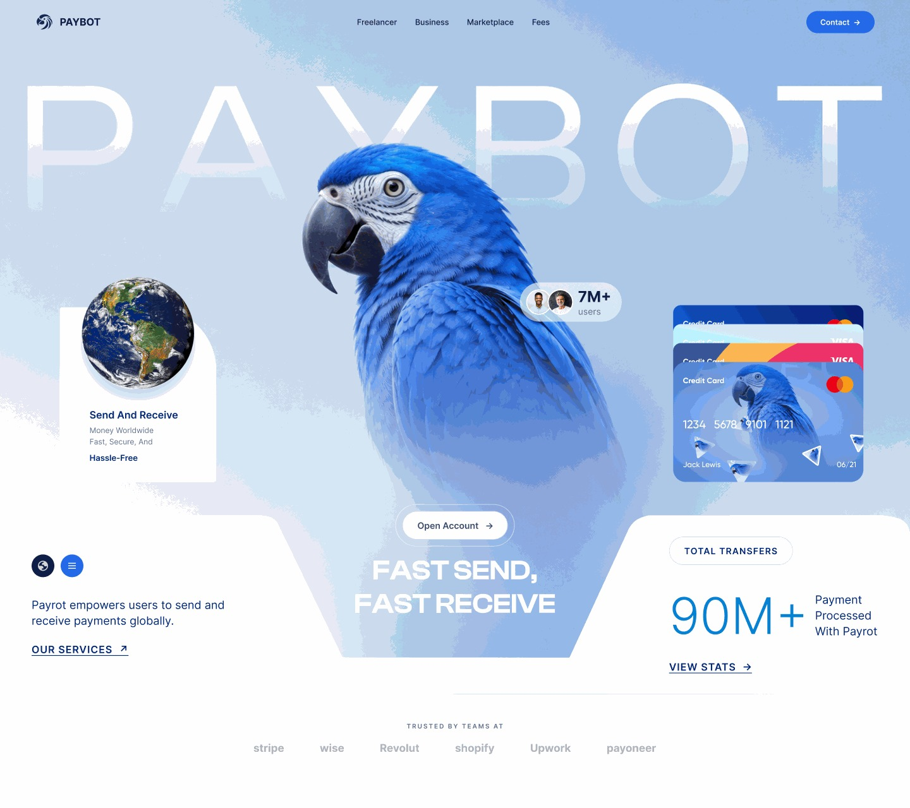
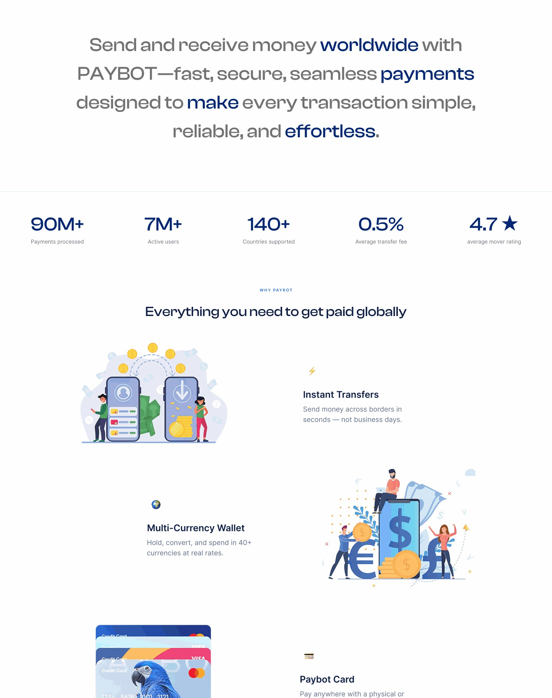
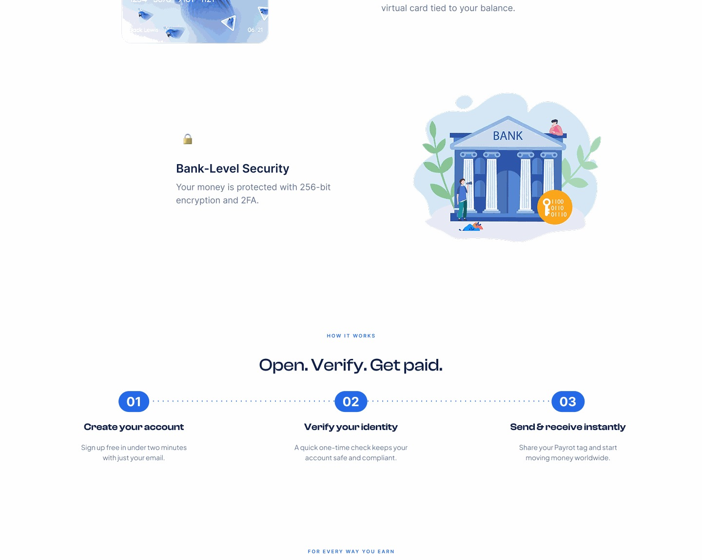
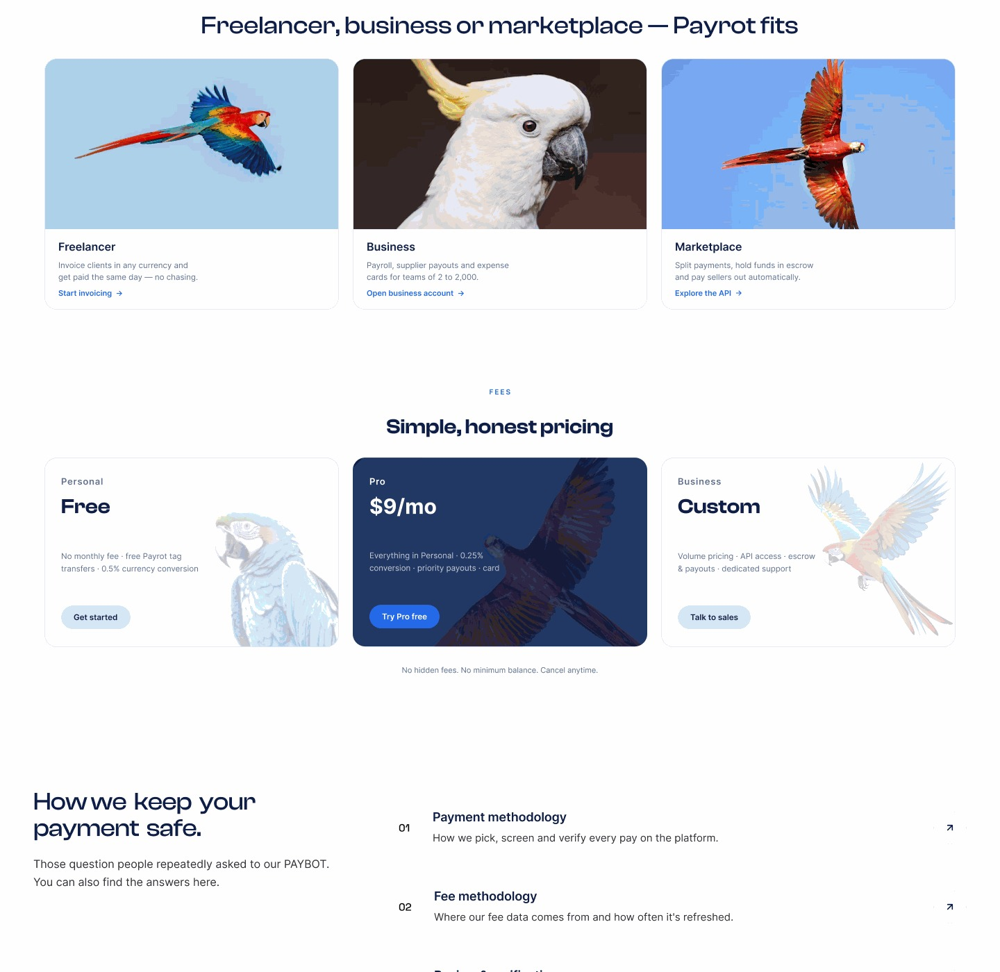
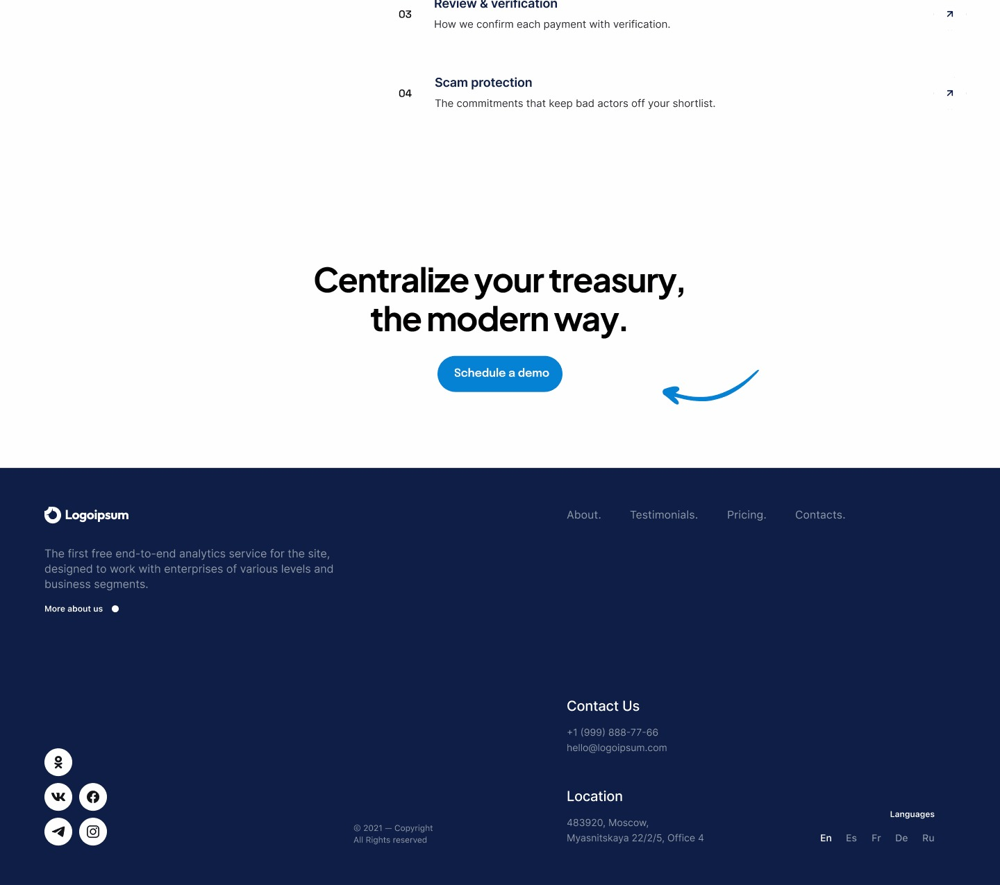

Global payments, made easier to understand
Paybot is a global payments product direction centered on transfers, a multi-currency wallet, card-based spending, and financial workflows for freelancers, businesses, and marketplaces. The design challenge is not only functional clarity but trust: users need to understand what they are doing, what it costs, and what happens next.

Why this product exists
Financial products carry a high burden of trust. Fees, currencies, transfer status, security, and payment methods can quickly create uncertainty. Paybot needed a product story that makes complex financial actions feel understandable and controlled.
Who it is for
Freelancers receiving and sending money internationally, businesses managing payments, and marketplace users who need a simpler way to move and manage money across currencies.
The design challenge
Paybot is a global payments product direction centered on transfers, a multi-currency wallet, card-based spending, and financial workflows for freelancers, businesses, and marketplaces. The design challenge is not only functional clarity but trust: users need to understand what they are doing, what it costs, and what happens next.
What needed to change
The design work starts by turning broad business friction into a small set of user-facing problems that can be prioritized and solved.
Problem statement
- International payments can be difficult to understand.
- Currency and fee information can be hidden in complex flows.
- Users need confidence before confirming a transaction.
- Different user types need different financial tasks from one product.
Design hypothesis
Build the experience around transparency and control: make balances and currencies easy to understand, show costs before commitment, simplify transfer steps, and reinforce security and status throughout the journey.
What the product needed to do
A case study should make the product legible before showing every screen. These are the major capabilities that shaped the information architecture.
How I approached the problem
The process is shown as a decision-making loop rather than a decorative five-step diagram.
Design decisions with a reason
Instead of listing deliverables, connect the interface back to the user or business problem it was meant to solve.
Show value and fees early
Translate the insight into a visible interface behavior, clearer hierarchy, or more predictable flow. The goal is to reduce friction without removing useful context.
Make transaction status explicit
Translate the insight into a visible interface behavior, clearer hierarchy, or more predictable flow. The goal is to reduce friction without removing useful context.
Reduce unnecessary steps
Translate the insight into a visible interface behavior, clearer hierarchy, or more predictable flow. The goal is to reduce friction without removing useful context.
Use consistent trust signals
Translate the insight into a visible interface behavior, clearer hierarchy, or more predictable flow. The goal is to reduce friction without removing useful context.
Design for multiple financial user types
Translate the insight into a visible interface behavior, clearer hierarchy, or more predictable flow. The goal is to reduce friction without removing useful context.
Let the interface do the talking
Large visuals keep the case study grounded in the actual work. Supporting visuals are used where the original showcase does not expose enough detail.




What the design delivers
Close the story by showing the product value created by the design work — not just the screens delivered.
Tenista →
A sharper digital home for tennis